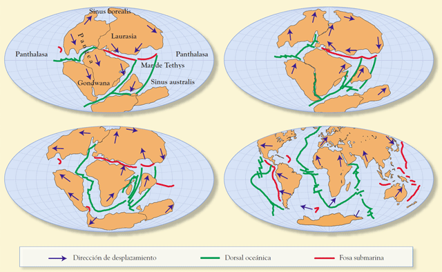

La tierra, descubrimientos, cambios asombrosos
La escala del tiempo geológico abarca toda la historia de la Tierra. Se encuentra enmarcada a lo largo de aproximadamente 4.567 Ga (Gigaannum, mil millones de años)

La geología comprende un conjunto de geociencias, así conocidas actualmente desde el punto de vista de su pedagogía, desarrollo y aplicación profesional. Ofrece testimonios esenciales para comprender la tectónica de placas, la historia de la vida a través de la paleontología, y cómo fue la evolución de esta, además de los climas del pasado. En la actualidad la geología tiene una importancia fundamental en la exploración de yacimientos minerales (minería) y de hidrocarburos (petróleo y gas natural), y la evaluación de recursos hídricos subterráneos (hidrogeología). También tiene importancia fundamental en la prevención y entendimiento de desastres naturales como remoción de masas en general, terremotos, tsunamis, erupciones volcánicas, entre otros. Aporta conocimientos clave en la solución de problemas de contaminación medioambiental, y provee información sobre los cambios climáticos del pasado. Juega también un rol importante en la geotecnia y la ingeniería civil. También se trata de una disciplina académica con importantes ramas de investigación. Por extensión, han surgido nuevas ramas del estudio del resto de los cuerpos y materia del sistema solar (astrogeología o geología planetaria).